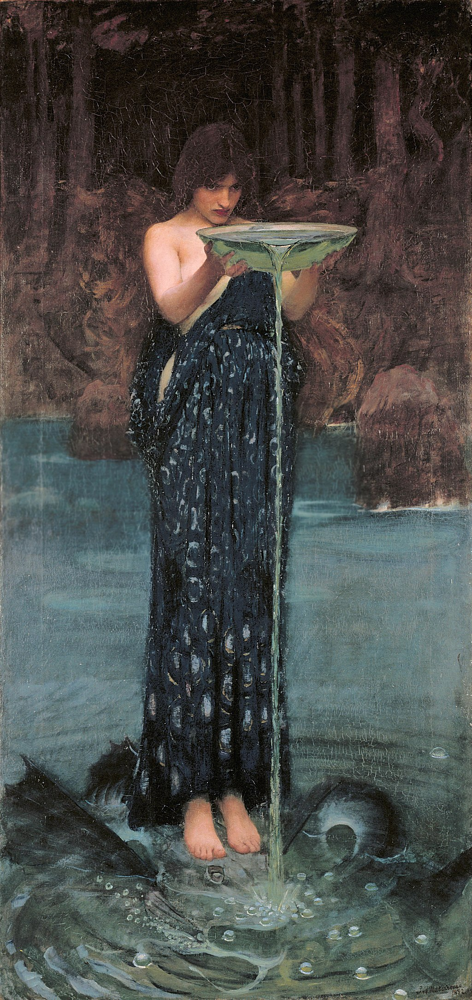

<head>
<meta charset="UTF-8" />
<meta name="keywords" content="drawing, painting" />
<meta name="description" content="drawings by Sunjy" />
<title>Sunjy</title>
<link rel="shortcut icon" type="image/x-icon" href="../../mImages/mCommon/favicon.ico" media="screen" />
<link rel="stylesheet" type="text/css" href="../../mCsses/mCommon/mCssA.css" />
<link rel="stylesheet" type="text/css" href="../../mCsses/mCommon/mCssB.css" />
<link rel="stylesheet" type="text/css" href="../../mCsses/mCommon/mCssC.css" />
<link rel="stylesheet" type="text/css" href="../../mCsses/mCommon/mCssD.css" />
<link rel="stylesheet" type="text/css" href="../../mCsses/mContent/mCssA.css" />
<link rel="stylesheet" type="text/css" href="../../mCsses/mContent/mCssB.css" />
<link rel="stylesheet" type="text/css" href="../../mCsses/mContent/mCssC.css" />
<link rel="stylesheet" type="text/css" href="../../mCsses/mContent/mCssD.css" />
</head>
<script type="text/javascript" src="../../mScripts/mContent/mContentAA.js" /></script>
<script type="text/javascript" src="../../mScripts/mContent/mContentAB.js" /></script>
<script type="text/javascript" src="../../mScripts/mContent/mContentAC.js" /></script>
<script type="text/javascript" src="../../mScripts/mContent/mContentAD.js" /></script>
<script type="text/javascript"></script> 
<script type="text/javascript">
document.write('<div class="mImgAbsolute"></div>');
/*
document.write('<p class="mFontSizeBColor" />From a white paper...</p>');
document.write('<table class="center"><tr><td>');
document.write('');
document.write('</td></tr></table>');
*/
</script>


<script type="text/javascript">
document.write('<p class="mFontSizeBColor" />Circe Invidiosa</p>');
document.write('<p class="mFontSizeSColor" />“Circe Invidiosa,” which in Latin means “Jealous Circe” by John William Waterhouse, portrays Circe, poisoning the water to turn Scylla, her rival into “a hideous monster.”<br><br>Circe is a goddess of magic, or sometimes an enchantress from Greek mythology, and Scylla was a beautiful nymph who gets turned into the monster.<br><br>In Latin, invidia is the sense of envy, a “looking upon” associated with the evil eye. Invidia or envy is one of the Seven Deadly Sins in Christian belief. Invidia is also the Roman name for the ancient Greek goddess, Nemesis.<br><br>In this painting, Waterhouse has expertly invested his main subject with an aura of menace, with deep greens and blues and the echo of straight vertical lines emphasizing the inevitability of her intent.<br><br>This painting by Waterhouse is his second depiction of Circe, following his painting “Circe Offering the Cup to Ulysses” in which the sorceress Circe offers Odysseus (called Ulysses by the Romans) a cup containing a potion with which she seeks to bring him under her spell.<br><br>Waterhouse again returned to the subject of Circe a third time with his painting of “The Sorceress.”<br><br>Waterhouse worked in the Pre-Raphaelite style, several decades after the breakup of the Pre-Raphaelite Brotherhood.<br><br>The Brotherhood included artists such as Dante Gabriel Rossetti, John Everett Millais, and William Holman Hunt.<br><br>Waterhouse embraced the Pre-Raphaelite style even though it had gone out of fashion in the British art scene.<br></p>');
document.write('<table class="center" /><tr><td>');
document.write('<br>Circe is a goddess of magic, or sometimes an enchantress from Greek mythology, and Scylla was a beautiful nymph who gets turned into the monster.<br><br>In Latin, invidia is the sense of envy, a “looking upon” associated with the evil eye. Invidia or envy is one of the Seven Deadly Sins in Christian belief. Invidia is also the Roman name for the ancient Greek goddess, Nemesis.<br><br>In this painting, Waterhouse has expertly invested his main subject with an aura of menace, with deep greens and blues and the echo of straight vertical lines emphasizing the inevitability of her intent.<br><br>This painting by Waterhouse is his second depiction of Circe, following his painting “Circe Offering the Cup to Ulysses” in which the sorceress Circe offers Odysseus (called Ulysses by the Romans) a cup containing a potion with which she seeks to bring him under her spell.<br><br>Waterhouse again returned to the subject of Circe a third time with his painting of “The Sorceress.”<br><br>Waterhouse worked in the Pre-Raphaelite style, several decades after the breakup of the Pre-Raphaelite Brotherhood.<br><br>The Brotherhood included artists such as Dante Gabriel Rossetti, John Everett Millais, and William Holman Hunt.<br><br>Waterhouse embraced the Pre-Raphaelite style even though it had gone out of fashion in the British art scene.<br>" />');
document.write('</td></tr></table>');
</script>


